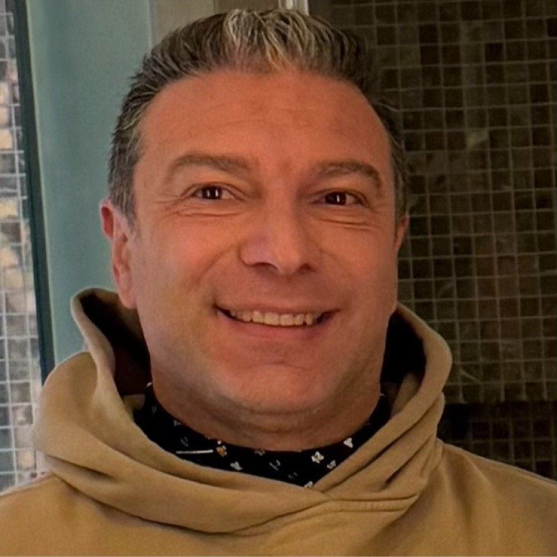

Post-Quantum Cryptography
Stewarding the transition to quantum-resistant computing through standards, cryptographic agility, interoperable technologies, and practical migration pathways from policy to deployed systems.
PQC Area →
Associate Professor of Computer Science
Director, Confidential Intelligence Lab
Artificial intelligence and quantum technologies are reshaping the computing infrastructure on which society, industry, and national security increasingly depend. They are creating extraordinary new capabilities, but also changing long-standing assumptions about cybersecurity, privacy, and trust. My research asks how computing systems can remain secure, private, and resilient through this technological transformation.
I approach this challenge as an end-to-end systems problem, spanning cryptography, algorithms, software, computer architecture, and hardware. My work focuses on post-quantum cryptography and the migration toward quantum-resistant systems; privacy-enhancing technologies, particularly encrypted computation; protection of AI models and computing platforms against physical attacks; and resilient computing under faults and adversarial conditions.
The goal is not simply to defend today's systems against today's threats, but to build security, privacy, and resilience into the foundations of emerging computing infrastructure—and to translate these ideas into practical systems, open technologies, standards, and ultimately real-world adoption.
I pursue this research through the Confidential Intelligence Lab (CIL) at UC Irvine.
Stewarding the transition to quantum-resistant computing through standards, cryptographic agility, interoperable technologies, and practical migration pathways from policy to deployed systems.
PQC Area →Building the foundations for computing on sensitive information without compromising its confidentiality, advancing privacy-enhancing technologies from cryptographic foundations and standards to efficient systems and real-world applications.
PETs Area →Exploring algorithms and computational paradigms inherently friendly to encrypted computation, and co-designing them with cryptography and computing systems to enable meaningful privacy-preserving applications at scale.
Encrypted Computation Area →Building AI systems that remain trustworthy under physical attacks, natural perturbations, and hardware-level threats through cross-layer protection spanning algorithms, software, system architecture, and silicon.
Secure and Reliable Encrypted Computation Area →I welcome inquiries from students, researchers, and collaborators interested in cryptography, privacy-enhancing technologies, secure AI, resilient computing, and related systems research.
Students & Collaborators →Students are welcome to meet with me to discuss courses, research opportunities, projects, and academic questions.
By appointment.
Donald Bren Hall 3076
University of California, Irvine
Irvine, CA
ro.cammarota [at] uci.edu